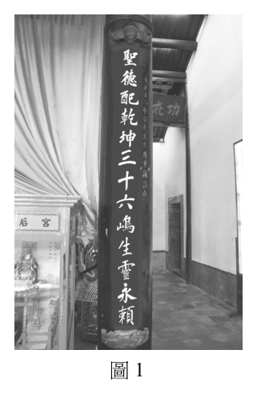
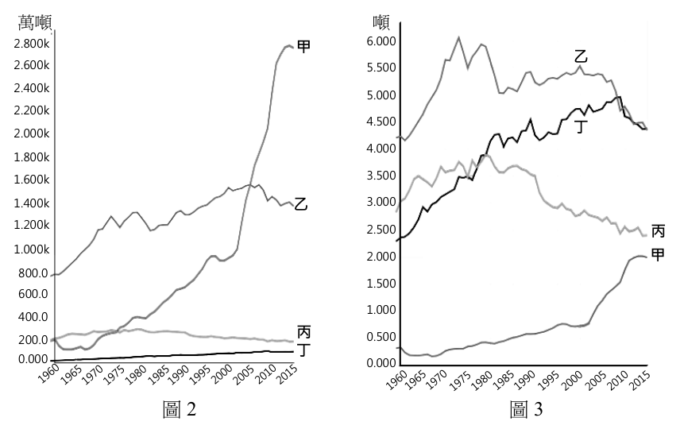
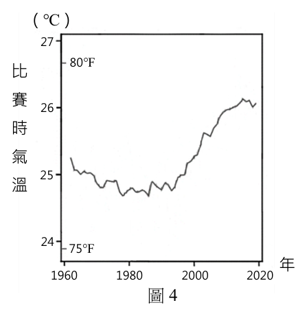
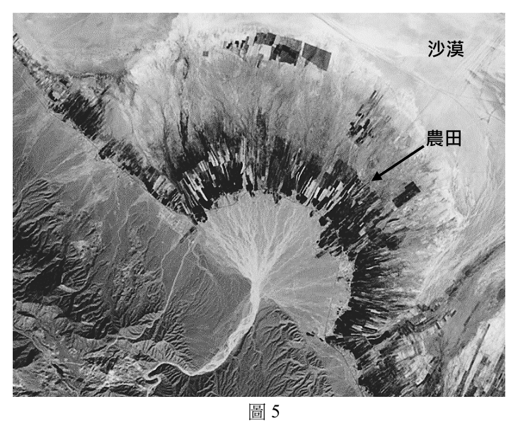
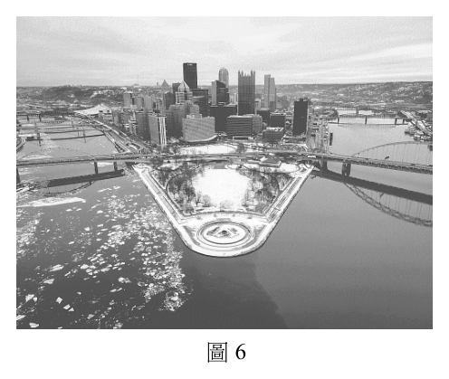
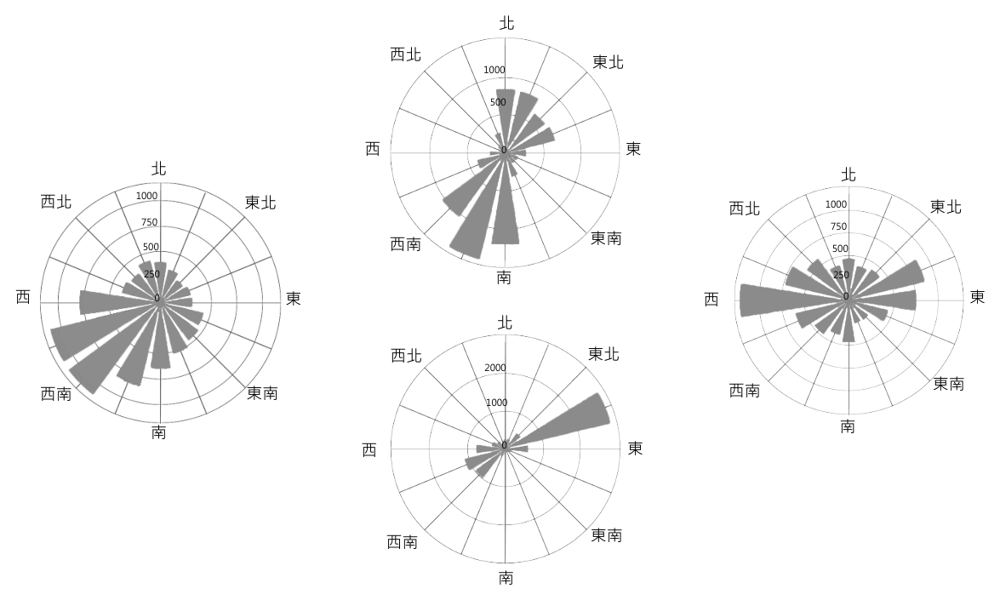
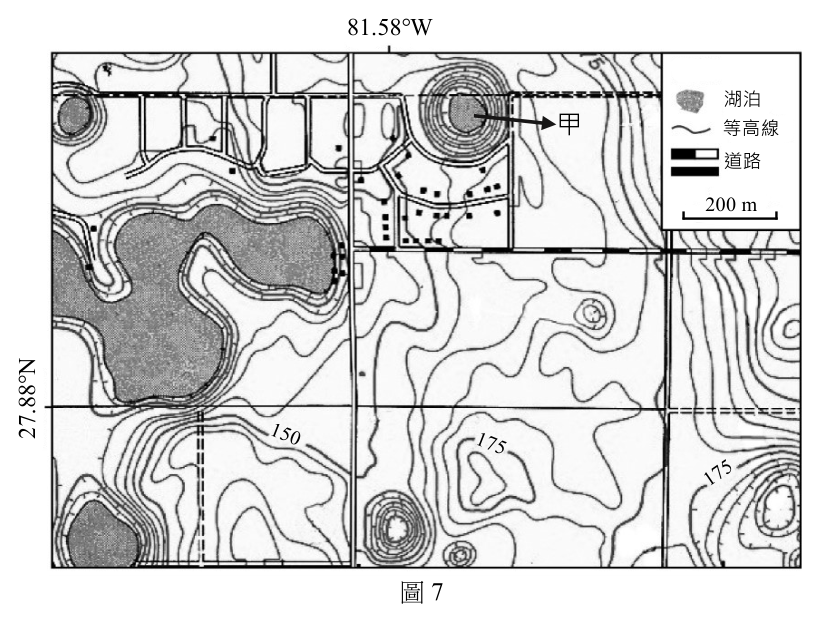
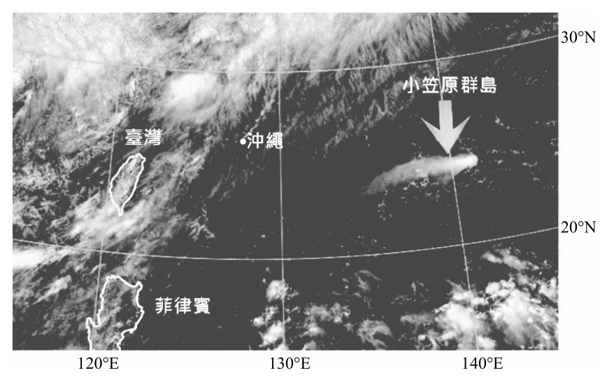
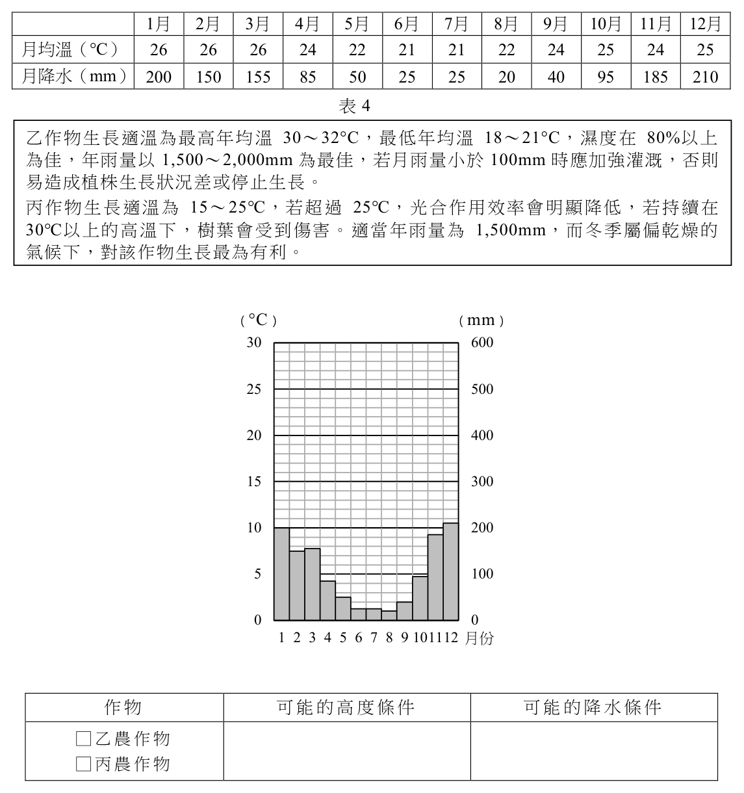

開卷有益 ／
分科測驗 ／ 地理 ／ 113 年113 年分科測驗地理試題與答案
這一頁是民國 113 年分科測驗地理的整份歷屆試題，共 43 題，題目與標準答案出自大考中心 分科測驗歷年試題（依著作權法 §9，考試試題不受著作權保護），其中 43 題附有詳解。以下逐題列出題幹、選項與答案；要計時作答或記錄成績，請用線上練習。
大學入學考試中心原始場次代碼：分科地理
線上作答這一科 →
全部 43 題
第 1 題
圖1 是臺灣某廟宇的對聯上聯,對聯文字顯示該廟宇所在縣市
的地理特色。該縣市除此廟宇、北回歸線標等觀光資源外,
還可能包括下列何者?(註:嶋=島)

（A） 峽谷（B） 苔原（C） 錐狀火山（D） 珊瑚礁生態
圖1答案：（D）
詳解與考點 正解：將題幹的廟宇對聯所指地域與北回歸線標一併定位，可判定為澎湖的海島環境。澎湖周邊海域水淺、日照充足，具珊瑚礁生態系的觀光資源，故選 D。
A：峽谷多與高起伏山地及河流下切有關，並非澎湖海島地形的代表性資源。
B：苔原出現在高緯度寒冷地區，與北回歸線附近的熱帶、亞熱帶環境不符。
C：錐狀火山是火山活動形成的地貌，不能由本題的海島與北回歸線定位線索推得。
本題考點：區域定位（regional localization）——把人文地標與緯度線索交叉使用，避免只用單一名稱猜測地點；珊瑚礁生態系（coral reef ecosystem）——低緯暖水、日照與清澈淺海是判斷珊瑚礁分布的主要環境條件；臺灣離島地理——判斷觀光資源時，要連結島嶼的地質、氣候與海洋環境。
第 2 題
蔓生千斤拔是矮生灌木,根具有固氮作用,抓地力強,尼泊爾農技人員在喜馬拉雅山
南坡的梯田邊緣,將其作為綠籬。該國農技人員將千斤拔納入農業系統中,最可能是
認為該植物具有下列哪項環境保育效益?
（A） 預防病蟲侵害（B） 降低侵蝕基準（C） 緩解土壤沖蝕（D） 減少蒸發散量答案：（C）
詳解與考點 正解：關鍵在千斤拔具有抓地力強的根，又被種在喜馬拉雅山南坡梯田的邊緣；植被根系可固定表土，綠籬也能減慢坡面逕流，因此最直接的環境保育效益是緩解土壤沖蝕，故選 C。
A：固氮與抓地力的線索分別指向養分補充與固土，沒有顯示千斤拔能直接防治病蟲害。
B：侵蝕基準是河流侵蝕所受下游水位或基準面的控制，種植綠籬不會改變此一地形條件。
D：植物可能影響水分循環，但題幹特別給出根系抓地力與坡地梯田，判斷重點是防止表土被沖刷。
本題考點：土壤沖蝕（soil erosion）——坡地出現強根系、覆蓋植被或綠籬時，優先判斷其固定土壤與減緩逕流的作用；侵蝕基準（base level of erosion）——只有河川出口水位或地形基準改變時，才用來解釋河流侵蝕強弱。
第 3 題
2023 年6 月,臺東縣金峰鄉才有連鎖便利商店的設立,一般認為其將會衝擊到當地既有的
雜貨店,不過當地雜貨店的老闆說:「他有信心可以留住客戶,因為雜貨店的人情味
濃厚,客戶常來店裡聊天。」就老闆的說法,雜貨店的存在最符合下列哪個概念
陳述的重點?
（A） 城鄉關係（B） 生產客製化（C） 節點與連線（D） 空間的社會性答案：（D）
詳解與考點 正解：雜貨店老闆強調的不是商品本身，而是客戶在店內聊天所形成的人際互動與歸屬感；同一間店因社會關係而具有不同意義，正是空間的社會性，故選 D。
A：城鄉關係討論都市與鄉村間的人口、資源或功能互動，題幹沒有比較兩者的關係。
B：生產客製化是依顧客需求調整產品或服務規格；店內的人情往來不是生產流程的客製化。
C：節點與連線著重交通、通訊或網絡中的位置與連結，題幹的判準是店內社會互動，不是網絡結構。
本題考點：空間的社會性（social construction of space）——場所的功能與意義會由人際互動、記憶和認同共同形成；地方感（sense of place）——若題幹強調居民對場所的情感連結或日常互動，可用來判斷空間的社會意義。
第 4 題
表1 為1990~2020 年四個國家的人口扶養比(%)資料。表中哪個國家最可能經過人口
紅利階段且接著進入人口負利階段?
表1
1990 1995 2000 2005 2010 2015 2020
甲 48.7 49.9 49.5 50.1 50.9 57.8 62.4
乙 90.6 85.1 81.4 80.1 79.1 80.9 78.7
丙 71.7 68.6 64.2 59.9 56.0 51.6 48.7
丁 62.0 64.4 59.7 53.8 49.5 45.6 46.9
甲 48.7 49.9 49.5 50.1 50.9 57.8 62.4 乙 90.6 85.1 81.4 80.1 79.1 80.9 78.7 丙 71.7 68.6 64.2 59.9 56.0 51.6 48.7 丁 62.0 64.4 59.7 53.8 49.5 45.6 46.9
（A） 甲（B） 乙（C） 丙（D） 丁答案：（A）
詳解與考點 正解：人口紅利階段的扶養比會降至相對低點，進入人口負利階段後則因高齡人口增加而回升。甲在 1990-2010 年約維持 49%-51%，其後由 50.9%升至 57.8%與 62.4%，呈現先經低扶養比、再明顯上升的趨勢，故選 A。
B：乙的扶養比從 90.6%降至 78.7%，全期仍偏高，且未呈現低點後持續回升的趨勢，較不像已經歷人口紅利後進入人口負利階段。
C：丙由 71.7%一路降至 48.7%，顯示逐步接近或進入人口紅利，尚無人口負利階段的回升訊號。
D：丁由 62.0%降至 45.6%，2020 年雖微升為 46.9%，但上升幅度很小，較像剛到低點附近；它看似也有回升，卻不如甲呈現持續而明顯的負擔加重。
本題考點：人口紅利（demographic dividend）——扶養比下降、工作年齡人口占比提高時，才具人口紅利條件；人口負利（demographic burden）——扶養比在低點後持續上升時，優先判斷高齡化帶來的依賴負擔。
第 5 題
過去美國將許多廢棄電子產品運往中國提煉貴金屬,近期中國經濟發展程度提高,促使
電子垃圾大多轉往南方區域的西非國家處理。學者指出:因西非國家處理電子垃圾仍以
焚燒方式為主,已對當地環境與勞工健康帶來更大的危害。該現象最能夠說明西非國家
的經濟發展,最可能具有下列哪項特點?
（A） 已進入到後工業化的經濟發展階段（B） 積極推動進口替代的經濟發展策略（C） 受限於世界體系內的經濟發展差異（D） 持續維持殖民地式的經濟發展特色答案：（C）
詳解與考點 正解：關鍵在電子垃圾由美國轉移至中國、再轉往西非，且西非仍以焚燒這種低成本方式處理，污染與健康成本因而集中於處理端。材料呈現的是較富裕地區把高風險處理環節外移到發展條件較弱的地區，反映世界體系中核心與邊陲地區的發展落差，故選 C。
A：後工業化著重服務、知識與高附加價值活動；以焚燒處理進口電子垃圾並不能證明已進入此一階段。
B：進口替代是以本國生產取代進口消費品的策略，題幹說的是承接外來廢棄物，兩者的經濟活動方向不同。
D：殖民地式發展可用來討論資源被外部控制的歷史脈絡，但題幹直接提供的是當代國際分工與處理風險轉移，不能據此判定仍維持正式殖民地關係。
本題考點：世界體系（world-systems theory）——判斷核心與邊陲時，看高利潤活動與污染風險由誰承擔；電子垃圾（e-waste）——處理技術與環境規範差異會使廢棄物跨境移動；環境正義（environmental justice）——污染負擔集中在資源較少的群體時，可用分配不均加以分析。
第 6 題
新聞提到:「菲律賓首都馬尼拉南方約30 多公里處的Santa Rosa 市,市長細數其近年
政績,包括工業區的設立、農業用地的保留、新興住宅區的建設,使該市已逐漸成為
馬尼拉大都會的一部分。」上述內容最適合用來說明下列哪項概念?
（A） 都市成長（B） 競租曲線（C） 都市擴張（D） 假性都市化答案：（C）
詳解與考點 正解：馬尼拉南方的 Santa Rosa 市出現工業區、住宅區，並逐漸成為大都會一部分，材料描述的是都市建成區與都市機能向外圍城鎮延伸、併入都會區的空間過程。這正是都市擴張，故選 C。
A：都市成長是人口、規模或機能增加的廣義說法；題幹特別強調外圍地區被納入大都會，較精確的是都市擴張。
B：競租曲線用來說明不同土地利用者對距離市中心的地租支付能力，題幹沒有地價、租金或土地競爭的資料。
D：假性都市化指人口快速集中都市而就業與基礎設施不足的現象；本題呈現的是工業與住宅開發帶動的實際空間延伸，判別重點不同。
本題考點：都市擴張（urban expansion）——看到核心都市向郊區延伸、鄰近城鎮併入都會區時適用；都市成長（urban growth）——可指人口或機能增加，未必包含外擴的空間證據；假性都市化（pseudo-urbanization）——人口都市化快於產業與服務承載時才判定。
第 7 題
2023 年西亞政治局勢緊張,葉門武裝組織攻擊紅海航線的貿易商船,為了安全考量,許多
貨輪被迫放棄通行蘇伊士運河。此衝擊對全球海運最可能帶來下列哪項直接影響?
（A） 黑海貨運取代紅海航線（B） 歐亞貨運運輸成本增加（C） 降低歐美之間貨物需求（D） 波斯灣石油運輸量大減答案：（B）
詳解與考點 正解：紅海與蘇伊士運河是歐亞海運的重要捷徑，貨輪避開該航線後必須改走較長的航程。航行時間、燃料與保險等成本會先上升，因此最直接的影響是歐亞貨運運輸成本增加，故選 B。
A：黑海與紅海的航線位置和出入口不同，黑海貨運不能直接替代經紅海與蘇伊士運河往返歐亞的通道。
C：改道首先改變的是運輸成本與時間；歐美貨物需求是否下降還受價格、所得與替代品等因素影響，不是此事件的直接結果。
D：波斯灣石油的產量與需求不會因紅海航線受威脅而必然大減，較可能改變的是運輸路線、時間與費用。
本題考點：蘇伊士運河（Suez Canal）——判斷其受阻影響時，先連結歐亞之間的航程縮短功能；海運成本（shipping cost）——航程變長會直接增加燃料、時間與風險成本；直接影響與間接影響（direct and indirect effects）——先選由事件立即造成的變化，再評估後續市場反應。
第 8 題
2007 年,印度實行一項名為「二次蜜月」的生育計畫,只要新婚夫妻在婚後兩年才生
第一胎,就給予五千盧比的獎勵,若婚後三年才生第一胎,則給予七千五百盧比。希望
藉由該生育計畫減少生育率持續上升,抑制人口總數加速膨脹的問題。生育計畫實施
當時,印度最可能處於下列哪個人口轉型階段?
（A） 低穩定階段（B） 高穩定階段（C） 早期擴張階段（D） 晚期擴張階段答案：（C）
詳解與考點 正解：政策以獎勵延後第一胎來壓低生育率，題幹並說人口總數仍在加速膨脹，表示死亡率已下降而生育率仍高，自然增加率明顯。這是人口轉型的早期擴張階段，故選 C。
A：低穩定階段的出生率與死亡率都高，人口成長緩慢，與政府急於抑制人口加速增加的情境不合。
B：高穩定階段的出生率與死亡率都低，人口成長已趨緩，通常不會以延後第一胎作為主要的抑制人口措施。
D：晚期擴張階段的生育率已顯著下降，人口雖可能仍增加，但成長速度會逐步放緩，與題幹的持續快速膨脹不同。
本題考點：人口轉型模型（demographic transition model）——先比對出生率、死亡率與自然增加率的組合；早期擴張階段（early expanding stage）——死亡率先降、生育率仍高，人口增加最快；生育政策（fertility policy）——鼓勵延後生育的措施主要作用於出生時點與總生育量。
第 9 題
兩位學者針對近年來非洲各國的一項政策進行辯論。學者甲:「非洲各國實施這項政策,
大幅增加了糧食作物生產,對解決非洲糧食問題帶來巨大貢獻。」學者乙:「非洲各國
實施這項政策,雖增加糧食作物生產,但窮苦人家仍缺乏資金採買作物種子。其實
並沒有解決非洲的糧食問題。」根據上述內容,兩位學者辯論的非洲各國政策最可能是
下列何者?
（A） 產業轉型（B） 綠色革命（C） 生質能作物種植（D） 農產貿易自由化答案：（B）
詳解與考點 正解：兩位學者都承認糧食作物產量增加，分歧在於窮苦農戶是否有資金購買種子。以高產量種子、相關投入與技術提高作物產量，卻可能因投入成本使小農難以受益，正是綠色革命的典型爭議，故選 B。
A：產業轉型是產業部門結構由農業轉向工業或服務業等的變化，不能直接解釋種子取得與糧食增產的關聯。
C：生質能作物種植可能與糧食作物競爭土地及資源，並非以提高糧食作物生產為核心的政策。
D：農產貿易自由化著重關稅與市場開放，題幹的關鍵線索是高產種子帶來增產及其資金門檻，兩者不相符。
本題考點：綠色革命（Green Revolution）——看到高產種子與增產效果時可連結此政策；農業投入（agricultural inputs）——種子、肥料與灌溉等成本會影響小農能否採用技術；糧食安全（food security）——產量提高不等於所有家庭都能取得與負擔食物。
第 10 題
圖2 是1960-2015 年美國、德國、中國、澳大利亞等國的碳排放量變化圖。圖3 是
該四國平均每人碳排放量圖。圖中何者是德國?
萬噸 噸
2.800k 甲 6.000 乙
2.600k 5.500
2.400k
5.000
2.200k
4.500 丁 2.000k
4.000
1.800k
1.600k 3.500
1.400k 乙 3.000
1.200k 2.500 丙
1.000k 2.000 甲
800.0
1.500
600.0
1.000 400.0
200.0 丙 0.500
丁
0.000 0.000
圖2 圖3

（A） 甲（B） 乙（C） 丙（D） 丁
請記得在答題卷簽名欄位以正楷簽全名共 11 頁 地理考科答案：（C）
詳解與考點 正解：辨識德國要同時看總碳排放量與平均每人碳排放量。德國的總量不如美國、中國高，且後期呈下降趨勢；平均每人排放量高於中國、低於美國與澳大利亞，兩圖交叉後對應丙，故選 C。
A：若只把總量較高當成判準，容易混同美國或中國；德國的關鍵是後期減量趨勢與中等偏高的人均值要同時符合。
B：人均排放量較高的國家不必然是總量最大的國家，澳大利亞的人口規模較小正是常見的區分線索。
D：總量偏低又人均偏低的組合較接近人口規模與能源使用皆不同的國家，不能對應德國的兩項特徵。
本題考點：總量與人均量（total and per-capita emissions）——總量反映人口與經濟規模，人均量反映每人平均排放強度，兩者必須分開讀；時間序列判讀（time-series interpretation）——比較各線的上升、下降與轉折，不只看單一年份高低；交叉圖表比對（cross-chart comparison）——同一國家需在兩張圖都符合特徵，才可完成標示配對。
第 11 題
2021 年6 月高雄外海的輸油管破裂,導致小琉球海域的海龜棲地受到影響,因此政府
立即進行持續一週全面性的海龜數量調查。其最適合的調查方法為下列何者?
（A） 藉由水溫差異評估（B） 透過問卷調查分析（C） 利用電子地圖比對（D） 以空拍機進行估算答案：（D）
詳解與考點 正解：題幹要求在輸油管破裂後的一週內，對小琉球海域做全面性的海龜數量調查；需要的是能快速、重複且直接觀察大範圍個體的方法。以空拍機取得海面影像並估算個體數，最能同時符合範圍與時效，故選 D。
A：水溫可用來評估海龜棲地的環境條件，不能直接得出受影響海域的海龜數量。
B：問卷蒐集的是受訪者的經驗或認知，無法替代災後對野生動物族群的全面普查。
C：電子地圖可整合位置資料，但若未加入即時觀測，不能直接計數海龜個體。
本題考點：遙測（remote sensing）——災後需要在短時間覆蓋大面積時，可用空載影像取得直接觀測資料；族群普查（population census）——題目問數量時，優先選擇能辨識或估算個體數的資料，而非僅描述棲地條件的指標。
第 12 題
2022 年宜蘭縣西帽山雨量站的累積雨量突破一萬毫米,來到12,022 毫米。其中九月份
的雨量為1,273 毫米,而十月份的雨量高達4,574 毫米,超過了臺灣本島許多地區的
年降水量。上述十月份雨量的現象,最能夠反映下列何種降水概念?
（A） 年降水量（B） 降水強度（C） 降水季節（D） 降水變率答案：（B）
詳解與考點 正解：題幹把十月份 4,574 毫米的雨量與許多地區全年雨量相比，強調的是短時間內降下大量雨水，反映降水強度很高，故選 B。
A：年降水量是全年累積量；12,022 毫米可描述該年的總量，但題目特別指出十月的驚人雨量。
C：降水季節著重一年中各季或各月的分配型態，需比較完整的年內分布；本題要凸顯的是單月雨量集中且極大。
D：降水變率比較同一地點不同年期的降水差異，題幹沒有提供跨年的資料。
本題考點：降水強度（precipitation intensity）——看到短時間內的降水量特別大時，判作降水集中而強；年內分配（seasonality）——判斷降水季節要比較各月或各季的配置，不把單一月份的高值直接當成變率。
第 13 題
根據研究,氣溫降低時,空氣分子運動速度會變慢,且分子間的距離會拉近,導致空氣
密度變大。因此在室外舉辦的棒球比賽,被球棒擊
(°C)
出的球,會因為空氣阻力較大而飛得不遠;反之,
27
氣溫上升時,球的飛行軌跡情況則是相反。此外, 80°F
比
在室內球場舉辦的比賽,因可控制球場溫度,較
賽
不會出現上述的情況。圖4 為1960-2020 年美國 26 時
大聯盟棒球場比賽時平均氣溫的變化。據此研究,
氣
若只考慮氣溫因素,2010 年以後大聯盟棒球比賽, 25 溫
最可能具有下列哪種現象?

（A） 室外球場每年平均的全壘打數量有增加趨勢 24 75°F（B） 室外球場每年平均的全壘打數量有減少趨勢 年
1960 1980 2000 2020（C） 室內球場每年平均的全壘打數量有增加趨勢 圖4（D） 室內球場每年平均的全壘打數量有減少趨勢答案：（A）
詳解與考點 正解：題幹已給出因果鏈：氣溫上升使空氣密度降低，空氣阻力變小，室外被擊出的球飛得更遠。圖4顯示2010年後比賽時平均氣溫上升；若只考慮氣溫，室外球場的全壘打數量最可能增加，故選 A。
B：室外氣溫上升的效果是降低阻力，不會導出全壘打數量減少。
C：室內球場可以控制溫度，題幹特別指出較不會出現此一氣溫造成的差異，不能據此推論其全壘打增加。
D：同理，室內球場的溫度受控，僅由室外平均氣溫趨勢無法推得其全壘打減少。
本題考點：空氣密度（air density）——氣溫升高時，空氣分子間距增大，密度降低；空氣阻力（air resistance）——其他條件相同時，密度較低的空氣使飛行物受阻較小；控制變因（controlled variable）——室內球場的溫度控制使室外氣溫趨勢不能直接套用。
第 14 題
圖5 為某種地形的衛星影像圖。該地形最可能為下列何者?
沙漠
農田
圖5

（A） 冰河消融後在端磧前形成的外洗扇（B） 高山融雪匯成河川後形成的沖積扇（C） 颱風誘發岩層崩壞形成的土石流扇（D） 河口受海水阻擋後形成的三角洲扇答案：（B）
詳解與考點 正解：判準是水流由高山進入平坦地帶時，坡度驟減、流速下降，砂礫向外展開堆積而形成沖積扇。高山融雪匯成河流可持續提供水與沉積物，最符合 B，故選 B。
A：外洗扇必須連結冰河消融、端磧前方與冰水沉積；沒有冰河前緣的條件時，不能以外洗扇判定。
C：土石流扇由颱風或暴雨等短時強烈事件觸發，沉積物多沿單一溝谷快速堆出，成因與穩定融雪河流不同。
D：三角洲扇形成於河流進入海洋或湖泊、受靜水體阻擋之處；山前河流的沉積扇不能當成河口三角洲。
本題考點：沖積扇（alluvial fan）——河流出山口後坡度變小、搬運力下降時，判斷扇狀堆積地形；外洗扇（outwash fan）——必須有冰河與端磧的冰水沉積脈絡；三角洲（delta）——河口沉積須以海洋或湖泊等靜水體為必要環境。
第 15 題
近年來,歐盟有意推動地中海聯盟組織,以促進地中海南、北沿岸國家的經濟合作,
但此合作模式並未得到歐盟成員國的善意回應,主因之一是地中海周邊國家彼此多有
矛盾,政治摩擦不少,各國難以授權給地中海聯盟機制處理共同事務。下列何者屬於
上述的矛盾?
（A） 摩洛哥與西班牙的漁業權爭執（B） 埃及與蘇丹的水資源分配衝突（C） 義大利與土耳其的領海劃分糾紛（D） 象牙海岸與法國的殖民歷史仇恨答案：（A）
詳解與考點 正解：題幹的限制是地中海南、北沿岸國家之間的矛盾，且矛盾須足以妨礙共同事務授權。（A）摩洛哥與西班牙分居地中海西部兩岸，近海漁業資源與管轄權的摩擦正屬此類跨海域鄰近國家的利益衝突，故選 A。
B：埃及與蘇丹的水資源爭議主要屬尼羅河流域問題，蘇丹不是地中海沿岸國家，和題幹的合作範圍不合。
C：義大利與土耳其並非直接相對的海域鄰國；此說把東地中海常見的領海爭議對象錯置，不能作為題幹所述的典型矛盾。
D：象牙海岸位於西非幾內亞灣沿岸，不在地中海周邊，殖民歷史也不構成地中海聯盟內部的沿岸衝突。
本題考點：區域組織（regional organization）——先圈定組織的地理範圍，再判斷選項是否真屬成員或周邊國家的共同議題；跨界資源衝突（transboundary resource conflict）——相鄰國共享漁場、海域或水資源時，管轄與分配爭議會提高合作成本。
第 16 題
亞馬孫南部地區林地野火事件層出不窮,有可能是開墾林地或是自然野火所造成。巴西
政府於是發展出一套GIS 應用軟體,讓不同部落分享野火知識及回報野火發生地點,
並整合濕度與衛星影像資料,分析最可能發生火災的地區。此分析方法最可能是下列
何者?
（A） 視域分析（B） 疊圖分析（C） 環域分析（D） 地形(勢)分析答案：（B）
詳解與考點 正解：關鍵在系統同時整合野火回報地點、濕度與衛星影像等不同圖層，再找出火災最可能發生的區域；這正是將多項空間資料疊合比較的疊圖分析，故選 B。
A：視域分析判斷從特定觀測點能否看見某地，常受地形遮蔽影響，並非多條件火災風險的整合。
C：環域分析以某點、線或面的指定距離範圍為主，例如河流周邊 500 公尺，題幹未以距離門檻作判斷。
D：地形分析處理坡度、坡向與高程等地表形態；題幹的核心是濕度、影像與事件位置的多圖層結合。
本題考點：疊圖分析（overlay analysis）——需要同時滿足多個空間條件時，把各條件轉成圖層後疊合；環域分析（buffer analysis）——題幹出現距離某設施或邊界多遠時，才優先以緩衝區判斷。
第 17 題
圖6 為冬季時北美洲某個位於兩條河流匯集處(40.4°N, 80.0°W )的都市景觀。
照片左側河流發源於(41.9°N, 77.9°W ),
河面上有著浮冰分布,右側河流的源頭則位於
(38.5°N, 80.8°W)。該照片拍攝角度,最可能是
下列何者?

（A） 從方位角0°往90°拍攝（B） 從方位角0°往180°拍攝（C） 從方位角90°往180°拍攝（D） 從方位角270°往90°拍攝
圖6答案：（D）
詳解與考點 正解：先以都市座標為基準比較兩條河流源頭。左側河流源頭位於都市的東北方，右側河流源頭位於都市的西南方；再把這兩個相對方位與照片的左右位置交叉比對，只有 D 的拍攝方位角範圍能同時成立，故選 D。
A：0°往90°的方位範圍不能同時對應兩條河流一東北、一西南的來源位置與畫面左右關係。
B：0°往180°涵蓋的觀測方向仍無法使兩河的相對位置同時符合題述。
C：90°往180°偏向東南側，只能涵蓋部分方位資訊，不能完整解釋左、右兩河的來源分布。
本題考點：方位角（azimuth）——以正北為0°並順時針量角，先將座標差轉成相對方位；經緯度定位（latitude and longitude）——緯度較高為北、經度西經數值較小者較東，判讀時兩者要一起比較；空間視角轉換（spatial perspective）——照片左右是觀者視角，須與地圖上的相對方位交叉檢驗。
第 18 題
光華商場是販售3C 電子產品與零組件的著名商場,消費者可在商場內一次選購所需要
的電子產品或零組件,也可比較不同店家販售相同產品的價格。上述商場的經營型態,
最可能是採用下列哪項策略?
（A） 產業群聚（B） 水平整合（C） 聚集經濟（D） 產品標準化答案：（C）
詳解與考點 正解：光華商場讓多家電子產品與零組件店鋪集中，使消費者能一次購足並比較價格；商家共享客流、消費者降低搜尋成本，都是空間聚集帶來的外部效益，故選 C。
A：產業群聚較著重相關企業、供應鏈與支援機構的生產或創新連結；題幹著墨於零售店集中後的購物與比價便利，較直接是聚集經濟。
B：水平整合須有同層級企業合併或受同一控制的關係，多家店鋪同址競爭不代表所有權整合。
D：產品標準化是讓產品規格一致；題幹說的是店家位置集中與選購便利，沒有產品規格統一的線索。
本題考點：聚集經濟（agglomeration economies）——同類或相關活動集中可共享客群與資訊，並降低交易或搜尋成本；水平整合（horizontal integration）——要看到企業間的合併、收購或共同控制，不能只因店家相鄰就判定。
第 19 題
某旅行社在推銷不同國家的旅遊行程時,會根據出遊時各國的氣候狀況,建議旅客攜帶
必要物品,下列何者是12 月旅行不同國家時,最適合準備的物品?
甲、英國倫敦-傘具 乙、中國北京-羽絨大衣
丙、義大利威尼斯-傘具 丁、澳大利亞雪梨-羽絨大衣
戊、新加坡牛車水-羽絨大衣
（A） 甲乙丙（B） 甲乙丁（C） 乙丙戊（D） 丙丁戊答案：（A）
詳解與考點 正解：判準是 12 月南、北半球季節相反，並配合各地冬季的冷暖與濕潤特徵。英國倫敦冬季常濕潤，傘具合宜；中國北京冬季寒冷，羽絨大衣合宜；義大利威尼斯冬季也較濕冷，傘具合宜。澳洲雪梨位在南半球，12 月為夏季；新加坡全年炎熱，兩地皆不需羽絨大衣，故選 A。
B：乙正確，但丁把南半球夏季的雪梨誤作需要羽絨大衣，三項不能同時成立。
C：乙、丙的物品合宜，戊卻把熱帶的新加坡誤列為需要羽絨大衣。
D：丙合宜，但丁與戊分別忽略南半球夏季及新加坡的熱帶氣候。
本題考點：緯度與季節（latitude and seasonality）——判斷月份氣候時，先分辨所在地在南半球或北半球；氣候旅行準備（travel climatology）——把氣溫與降水特徵分開判，雨具不等於保暖衣物。
第 20 題
2024 年12 月底以後在歐盟銷售的手機,依該組織規定需全面採用USB Type-C 充電
插槽。該組織制定上述規定,最可能是在下列哪項背景下形成?
（A） 該組織議會通過與環境經濟相關法案,以降低電子垃圾產生（B） 該組織中央銀行放寬歐元貨幣政策,以促進商品價格的統一（C） 該組織法院針對申根區規範擴充法條,以避免設備不斷更換（D） 該組織各國家分別制定法案,再統一由組織執行委員會執行
請記得在答題卷簽名欄位以正楷簽全名共 11 頁 地理考科答案：（A）
詳解與考點 正解：本題問的是歐盟為何能統一規定手機充電插槽。以共同規格減少充電器與線材重複汰換，可降低電子廢棄物；由歐盟層級的立法機關通過環境與經濟相關規範，符合這種跨國標準化的形成背景，故選 A。
B：中央銀行的貨幣政策處理利率、貨幣供給與物價等總體經濟問題，不能決定手機硬體介面的統一。
C：申根規範處理人員跨境流動，不是消費性電子產品規格；法院也不是以擴充申根規範來制定充電插槽標準。
D：題幹所述的是歐盟共同規範，不是各會員國先各自立法後才由執行委員會彙整執行。
本題考點：超國家組織（supranational organization）——跨國共同市場需要一致規格時，觀察是否由組織層級制定對成員有約束力的規範；電子廢棄物（e-waste）——產品介面標準化可延長既有配件的使用，減少重複購買與廢棄。
第 21 題
臺中市新社區生產文心蘭的地區,具有日夜溫差大的優勢,使得花卉品質優良,深受
日本市場喜愛;部分農友利用鴨子的雜食性,進行園區蝸牛等蟲害防治。若僅依據上文,
該地文心蘭產業最可能具有下列哪項經營特徵?
（A） 透過傳統生態知識建立農作物最佳栽種環境（B） 結合周遭多樣觀光資源帶動農業多角化經營（C） 藉由生物防治、減少碳足跡以實踐綠色經濟（D） 利用生物科技改良出日本市場所需花卉品種答案：（A）
詳解與考點 正解：題幹指出日夜溫差是文心蘭品質優勢，並說明農友利用鴨子防治蝸牛；把在地環境與生物特性納入管理，最符合透過傳統生態知識建立農作物最佳栽種環境，故選 A。
B：題幹沒有提到觀光景點、遊程或農業以外的收入來源，不能推論為多角化經營。
C：鴨子防治蟲害確有生物防治的意義，但減少碳足跡的效果未由題幹提供；把已知作法延伸成綠色經濟，是這個選項看似合理卻不成立之處。
D：文心蘭品質來自既有品種配合氣候條件，沒有育種、基因改良或生物技術的線索。
本題考點：傳統生態知識（traditional ecological knowledge）——看到依地方氣候、生物習性與長期經驗安排農作時，判斷其為因地制宜的知識運用；生物防治（biological control）——利用生物抑制害蟲不必然能推出碳足跡或整體綠色經濟成效，須看題幹是否提供相關證據。
第 22 題
用電腦開啟網站時,畫面會彈出視窗要求使用者同意接受 Cookie,讓網站經營者可以
追蹤和收集使用者的數據,包括使用者瀏覽行為、位置和 IP 位址、網購清單等,進而
提供符合使用者需求的網頁廣告,尤其是具有網路地圖服務的網站,更會要求提供使用
者位置。該現象可能顯現下列哪項空間資訊科技發展的問題?
（A） 現代人際關係的疏離益加明顯（B） 公民科學發展進程仍相當有限（C） 空間隱私權受侵犯的潛在隱憂（D） 無法遏制具歧視性的偏見地圖答案：（C）
詳解與考點 正解：關鍵在 Cookie 蒐集瀏覽行為、位置、IP 位址與購物資料，並據此投放廣告；位置資訊與個人行為被追蹤時，直接涉及個人的空間隱私權，故選 C。
A：題幹描述的是資料蒐集與廣告投放，沒有證據可以推論人際關係因而疏離。
B：公民科學是一般民眾參與資料蒐集或研究，網站追蹤使用者資料並不等於公民參與科學。
D：偏見地圖是地圖呈現或演算法可能再製歧視的問題；題幹未討論地圖內容是否歧視，而是個資與位置被蒐集。
本題考點：空間隱私權（spatial privacy）——位置、移動軌跡與可識別資料被連結時，要判斷是否超出當事人可控制的使用範圍；Cookie（web cookie）——網站可藉此保存或串接使用資料，但便利服務不會消除個資保護的風險。
再生水技術是從廢水或汙水中經處理獲得的淨化水資源的先進技術。其中電容去離子 的技術是運用電吸附原理的過濾方法,使用多孔奈米碳材作為電極,通過電吸附過程 將水中汙染物和離子儲存在奈米碳材的孔洞中,以達到過濾、產生再生水的效果。請問:
第 23 題
有關再生水的電容去離子技術,其再生技術的形成,最適合以下列哪個概念解釋?
（A） 微笑曲線（B） 工業革命（C） 知識經濟（D） 產業群聚答案：（C）
詳解與考點 正解：題組描述電容去離子以奈米碳材、電吸附原理與水處理技術形成再生水方案，關鍵資源是研究、技術與創新知識，而非單純擴大勞力或工廠數量，最適合用知識經濟解釋，故選 C。
A：微笑曲線用來說明價值鏈中研發、品牌與製造環節的附加價值差異；題幹沒有比較產業鏈位置或價值分配。
B：工業革命指大規模機械化與生產方式的歷史轉變，不能精確說明一項依科學研發形成的水處理技術。
D：產業群聚需要企業、研究機構或供應鏈在特定地點集中互動；題組只說明技術原理，未提供空間集中的線索。
本題考點：知識經濟（knowledge economy）——產品或服務的核心競爭力來自研發、專業技術與創新時，用此概念判斷；產業群聚（industrial cluster）——必須有特定地點的企業與相關機構集中互動，不能只因技術先進就判定。
第 24 題
下列哪個國家,其再生水的總產量可能最高?
（A） 美國（B） 巴西（C） 越南（D） 肯亞答案：（A）
詳解與考點 正解：題目問的是再生水總產量，不是天然水資源多寡或單位人口使用量。再生水產量通常須同時具備龐大的都市與工業用水需求、污水處理設施與再利用投資能力；四國相比，美國最可能具有最大的處理規模與再利用需求，故選 A。
B：巴西國土廣大或天然水資源較多，不能直接推出再生水處理與再利用的總產量最高。
C：越南雖有都市與產業用水需求，但題目比較的是全國總量，不能只由人口或個別城市發展推定其高於美國。
D：肯亞的水資源需求可提高再生利用的重要性，然而需求迫切不等於已有最大的處理設施與總產量。
本題考點：總量與比率（absolute amount vs per-capita rate）——題目問總產量時，先比較市場規模、基礎設施與整體需求，不把缺水程度直接當成總量；水資源再利用（water reuse）——再生水規模須同時考量污水來源、處理能力與使用端需求。
風力發電雖是再生能源,但風力電廠的興建也會引發如噪音、漁場減少、鳥類棲地 消失等環境問題。有鑑於此,2000 年位於英國東岸的北海Blyth 離岸風電廠完工後, 英國政府為了未來能有效推動離岸風電,便開始累積海洋環境、風場狀況、漁業資料等 地理資訊,並與居民等權益關係人共同利用地理資訊進行風電廠從選址到興建的討論, 以更周全地劃設出可進行開發的風電場域。請問:
113年分科 請記得在答題卷簽名欄位以正楷簽全名 第 6 頁
地理考科 共 11 頁
第 25 題
下列何者最可能是Blyth 的風花圖(單位:時/年)?

（A） （B） 北 北
西北 1000 東北 西北 1000 東北 750
500
500
250
西 0 東 西 0 東
西南 東南 西南 東南
南 南（C） 北（D） 北
西北 東北 西北 1000 東北 2000
750
1000 500
250
西 0 東 西 0 東
東南 西南 東南 西南
南 南答案：（B）
詳解與考點 正解：Blyth 位於英國東岸，處在中緯度西風帶；判斷風花圖時，要看主要來風的累積時數是否集中於西南至西北扇區，而不是只看某一方向的瞬時強風。英國沿岸常受西風帶氣流影響，符合此背景的為（B），故選 B。
A、C、D：判讀這類圖時，若只憑單一方向的長度或把零星強風當成全年主風向，便無法判出盛行風帶。風花圖的各扇區須以全年出現頻率比較，主要來風仍應與西風帶的西側來風相符。
本題考點：行星風系（planetary wind belts）——先由緯度判斷盛行風帶，再核對主要來風方向；風花圖（wind rose）——比較各方向的累積頻率，最明顯的扇區才代表主風向。
第 26 題
Blyth 離岸風電廠完工後,該國政府興建離岸風電廠的過程,最可能是下列哪個概念的
具體實踐?
（A） 公民科學（B） 對抗性地圖（C） 自願性地理資訊系統（D） 公眾參與式地理資訊系統答案：（D）
詳解與考點 正解：題組明示政府累積海洋環境、風場與漁業的地理資訊，並與居民等權益關係人共同討論選址到興建；重點不只蒐集資料，而是讓公眾參與空間決策，屬公眾參與式地理資訊系統，故選 D。
A：公民科學著重民眾參與科學觀測或資料蒐集；題組的核心是權益關係人使用地理資訊共同討論開發決策。
B：對抗性地圖通常用來挑戰既有權力所主導的官方空間敘事，題組描述的是政府與居民協商規劃，沒有對抗官方地圖的情境。
C：自願性地理資訊系統著重使用者自願上傳位置資料；題組雖有多方資料，卻未把重點放在群眾自發標記，而在參與式決策。
本題考點：公眾參與式地理資訊系統（public participation GIS, PPGIS）——政府規劃若讓居民和利害關係人共同解讀空間資料並參與方案選擇，判作 PPGIS；自願性地理資訊（volunteered geographic information, VGI）——重點是民眾自主提供地理資料，與共同決策的目的不同。
Aorere 河是源自毛利語的河川名稱,該河出海口則位於源自英語的Golden 灣,因此 河川附近常可見到這兩個不同文化圈的混合文化現象。該河川的流域年雨量約700mm, 水位季節變化不明顯,是當地重要產業用水來源。貝類養殖是Golden 灣的重要產業, 但過往曾突然發生收成期變短的現象,導致收穫大幅減少,影響民生甚鉅。請問:
第 27 題
上述這兩個不同文化圈的混合文化現象,與下列哪個混合文化的案例最為接近?
（A） 澳洲發行原住民族圖騰貨幣（B） 越南華人製作法式麵包祭祖（C） 臺灣阿美族以母語書寫聖經（D） 厄瓜多印地安人信仰天主教答案：（C）
詳解與考點 正解：文中把毛利語的 Aorere 與英語的 Golden 灣並置，判斷重點是兩套文化符號仍被保留，並在同一地景中交會。（C）阿美族以自己的母語書寫源自基督教的聖經，同樣把原住民族語言與外來宗教文本結合，最接近這種雙重文化的混合，故選 C。
A：在國家貨幣上使用原住民族圖騰，較偏向主流國家採納少數族群符號，沒有呈現兩套語言或文化文本在同一表述中的交會。
B：以法式麵包祭祖也混合了不同文化元素，但重點在祭祀儀式中挪用食物；相較之下，題幹的地名語言並置更接近母語承載外來經典的文化表述。
D：印地安人信仰天主教可呈現外來宗教影響，但若未保留並結合原有文化符號，較像單向宗教轉換而非題幹所示的並置混合。
本題考點：混合文化（cultural hybridity）——判斷時要找不同文化元素是否在同一地名、語言、儀式或文本中結合並保留；文化擴散（cultural diffusion）——外來文化進入不必然等於混合，若取代原有符號而未交會，不能直接判為混合文化。
第 28 題
文中貝類養殖發生收成問題的原因,最可能與當地發生下列何種事件有關?
（A） 沿岸的北大西洋暖流勢力減弱,導致海水水溫突然變低（B） 河川集水區內飼養的牲畜糞便,導致河水細菌大量滋生（C） 六至八月的夏季旅客入境者眾,導致廢水排放總量增加（D） 太陽直射與暖化使得乾季拉長,導致河水自淨能力減弱
請記得在答題卷簽名欄位以正楷簽全名共 11 頁 地理考科答案：（B）
詳解與考點 正解：題組指出 Aorere 河是 Golden 灣貝類養殖的重要用水來源，且收成期曾突然縮短。集水區牲畜糞便若隨逕流進入河川，會增加細菌污染並惡化養殖水質，貝類易因衛生風險或生長受影響而縮短可收成期間，故選 B。
A：北大西洋暖流影響的是北大西洋海域，Golden 灣位於紐西蘭，不能以此洋流減弱解釋當地貝類收成問題。
C：紐西蘭位於南半球，6 至 8 月是冬季而非夏季；題幹也沒有提供旅客增加或廢水排放的資料。
D：題組已說河流水位的季節變化不明顯，且問題是突然出現的收成異常，沒有支持乾季拉長、河川自淨能力下降的證據。
本題考點：集水區污染（watershed pollution）——上游畜牧排泄物進入河川時，須追蹤其對下游養殖與飲用水水質的影響；貝類養殖水質（shellfish aquaculture water quality）——貝類會累積水中污染物，判斷收成異常時優先檢視流域污染源。
某地區每年平均至少會有數十個「天坑」形成,成因是地下岩洞的洞頂坍塌,造成 地表陷落。地下岩洞坍塌的原因,除地質條件外,也受到人為干擾的影響,如天坑容易 形成在儲水池、地下管線破裂處附近。圖7 為該地區的等高線地形圖。請問: 81.58°W
湖泊
甲 等高線
道路
200 m
27.88°N
圖7
第 29 題
圖7 中甲處的天坑,其「頂部」直徑的長度大約為多少公尺?

（A） 50（B） 100（C） 150（D） 200答案：（D）
詳解與考點 正解：關鍵在把圖7的比例尺 200 m 換算為甲天坑頂部的實際直徑；依比例尺估算結果為約 200 m，故選 D。
A：50 m 不是本題依比例尺換算出的頂部全寬，顯示沒有以完整直徑作估算。
B：100 m 容易把半徑誤當直徑；題目問的是從一側頂緣到另一側頂緣的全寬。
C：150 m 與本題的比例尺換算結果不符，估算時須以整段目標距離比對。
本題考點：地圖比例尺（map scale）——先以圖例的實際距離校準圖上長度，再求目標距離；地形圖判讀（topographic map interpretation）——天坑頂部的直徑要量兩側頂緣間的全寬，不是只量中心到邊緣。
第 30 題
題文中所述的天坑災害,最主要是受下列哪項地形作用所造成?
（A） 冰河作用（B） 岩溶作用（C） 火山作用（D） 風成作用答案：（B）
詳解與考點 正解：題幹指出地下岩洞洞頂坍塌、地表陷落，這是可溶性岩石受地下水溶蝕後形成洞穴，再因洞頂失穩而塌陷的過程，屬岩溶作用，故選 B。
A：冰河作用以冰蝕、冰磧與冰河地形為主，需要長期低溫與冰體活動，不能解釋地下岩洞坍塌。
C：火山作用可形成火山口或破火山口，但題幹的成因是地下洞穴與水管破裂附近的溶蝕、掏空，不是岩漿活動。
D：風成作用主要塑造沙丘、風蝕窪地等乾燥地形，並不會形成由地下岩洞崩塌造成的天坑。
本題考點：岩溶作用（karstification）——看到地下洞穴、可溶岩層與陷落坑時，優先判為地下水溶蝕及洞頂坍塌；天坑（sinkhole）——分辨時看地表是否因地下空洞失去支撐而下陷。
臺灣每年都需要從義大利進口數量龐大的稻米,以供餐廳製作燉飯料理。花蓮農改場 經過多年研究,培育出臺灣第一款燉飯專用米「花蓮26 號」,此舉促使一些休耕農地 紛紛種起花蓮26 號,以銷售給餐廳。請問:
第 31 題
臺灣培育花蓮26 號品種的現象,最適合以下列哪個概念解釋?
（A） 歐、亞兩大洲的區域互賴（B） 西方文化圈的形成與擴散（C） 全球經濟地理空間的重組（D） 全球化影響產業發展變遷答案：（D）
詳解與考點 正解：題組先呈現臺灣餐廳因義大利燉飯料理而需求進口米，再呈現花蓮培育專用品種並帶動休耕地轉作；外來飲食與國際貿易改變了本地農業的產品與生產安排，最適合用全球化影響產業發展變遷解釋，故選 D。
A：題幹涉及跨國貿易，但沒有在比較歐洲與亞洲兩大洲之間互賴的區域關係，重點是本地產業如何調整。
B：燉飯料理可反映西方飲食文化的傳入，但題組進一步強調的是農業研發與土地轉作，不能只停在文化圈形成與擴散。
C：全球經濟地理空間重組通常著重生產、資本或勞動在不同地點的大規模重新配置；本題最明確的證據是全球化需求促使地方農業產品轉型。
本題考點：全球化（globalization）——國際商品、飲食與市場需求改變本地產業的產品選擇時，以全球化的產業影響判斷；產業轉型（industrial transformation）——看到研發新品種、轉作或調整供應對象時，辨識產業因市場需求而改變的過程。
第 32 題
若僅依上文,當臺灣多數餐廳改以花蓮26 號作為燉飯的食材時,最可能帶來下列哪項
影響?
（A） 縮短食物里程以確保無毒種植（B） 區域專業化形成規模經濟效益（C） 提升糧食自給率降低對外依賴（D） 透過基因改造來促進糧食出口答案：（C）
詳解與考點 正解：題幹的關鍵是原本仰賴義大利進口稻米製作燉飯，後來以國內培育的花蓮26號供應餐廳。這是以本地生產替代進口食材，使燉飯米的供給較不依賴國外來源，直接提升糧食自給率並降低對外依賴，故選 C。
A：運輸距離可能因產地較近而縮短，但「無毒種植」取決於耕作與驗證方式，不會由食物里程自動確保，故不能選。
B：題幹只說部分休耕地改種並供應餐廳，未顯示生產集中到足以形成區域專業化或規模經濟的條件。
D：花蓮26號是經培育的專用米，題幹沒有基因改造的資訊；其用途是替代進口供應國內餐廳，也不是促進出口。
本題考點：糧食自給率（food self-sufficiency ratio）——判斷重點是國內生產是否取代原本的進口供給；食物里程（food miles）——運輸距離可影響環境成本，但不能推論農產品必然無毒；區域專業化（regional specialization）——需有生產集中與分工擴大等材料，不能只由單一作物出現推定。
2021 年8 月日本小笠原群島火山噴發,我國為掌握火山噴發出浮石的漂流動態, 隨即進行洋流數值模擬,推估浮石大約在10 月中旬接近沖繩,11 月中下旬接近臺東 沿岸、菲律賓北部島嶼等地。
11 月底,海巡署通報在屏東興海、旭海及臺東綠島等岸邊發現疑似浮石。截至 12 月7 日,發現浮石已隨著洋流漂流到花蓮七星潭,三貂角,富貴角,及桃園大堀溪 南岸等處。圖8 為小笠原群島與臺灣位置圖。請問:
30°N
小 笠原 群島
臺灣 沖繩
20°N
菲 律賓
120°E 130°E 140°E
圖8
第 33 題
文中火山位於太平洋板塊與下列哪個板塊的交界帶上?

（A） 歐亞板塊（B） 印澳板塊（C） 北美(洲)板塊（D） 菲律賓海板塊答案：（D）
詳解與考點 正解：小笠原群島位在伊豆－小笠原島弧，火山活動來自太平洋板塊隱沒到菲律賓海板塊之下；題文所述的火山因此位於太平洋板塊與菲律賓海板塊的交界帶，故選 D。
A：歐亞板塊雖與日本列島附近的板塊活動有關，但小笠原群島所在的島弧不是太平洋板塊與歐亞板塊直接交界之處。
B：印澳板塊主要在印尼、紐西蘭及印度洋周邊與其他板塊互動，與小笠原火山帶的位置不符。
C：北美板塊與太平洋板塊的交界影響日本東北部等區域；小笠原群島則位於更南側的菲律賓海板塊邊緣。日本位於多板塊交會區看似容易混淆，分辨關鍵仍是島弧的實際位置。
本題考點：隱沒帶火山（subduction-zone volcanism）——海洋板塊隱沒處常形成島弧與火山鏈；板塊邊界判讀（plate-boundary interpretation）——先定位島弧，再判斷相鄰的兩個板塊，不能只用國名推論。
第 34 題
根據題文,在答題卷中寫出臺灣東部海岸浮石漂流的前後蹤跡,主要是受到哪股洋流的
影響(2 分)?並說明判斷理由(3 分,30 字內)。
洋流 判斷理由
請記得在答題卷簽名欄位以正楷簽全名共 11 頁 地理考科
本題選項為上圖中的 A／B／C／D，請對照圖片作答。
標準答案未收錄
詳解與考點 正解：題文的漂流蹤跡由小笠原、沖繩到臺灣東部，接著沿東岸北上至花蓮、三貂角、富貴角及桃園，對應黑潮的北向流路。黑潮沿臺灣東側向北流動，能把浮石由東部海岸帶往北部，再繞至西北岸，故選 「黑潮；浮石沿臺灣東部海岸向北漂移至北部與西北岸」。
本題考點：黑潮（Kuroshio Current）——看到外海漂流物自臺灣東部沿岸向北移動時，優先以黑潮判讀；洋流追蹤（ocean-current tracing）——依時間先後排列漂流地點，流向須能連成連續路徑。
我國長照2.0 計畫,其服務體系及服務項目如下:1.社區整合服務中心(一鄉鎮一處) 提供醫療照護的老人服務,如失智或重病老人;2.複合型服務中心(一國中學區一處) 提供社區式的長照服務,如日間照顧;3.巷弄長照站(三個村里一處)則就近提供老人 生活照顧服務,例如共餐或送餐。
某生在探究活動中發現一份資料提到,接近30%的老年人不參與巷弄長照站提供的 共餐服務,是因為住家附近無此資源,因此他整理出表2 臺灣某地區的人口相關資料, 並據此繪製圖9 的各里老年人口數與社區照護機構分布位置圖,試圖提出增設巷弄長照 站的建議。請問:
表2
里別 人口數 老年人口數 扶養比(%) 扶老比(老年人口/壯年人口) 大安里 2,165 295 32.90 18.11
大港里 4,091 452 32.35 14.62
甲里 3,561 538 38.34 20.90
乙里 1,278 218 36.68 23.32
丙里 6,353 992 46.52 22.88
第 35 題
文中的長照2.0 服務體系,最適合以下列哪個概念來描述?
里別 人口數 老年人口數 扶養比(%) 扶老比(老年人口/壯年人口) 大安里 2,165 295 32.90 18.11 大港里 4,091 452 32.35 14.62 甲里 3,561 538 38.34 20.90 乙里 1,278 218 36.68 23.32 丙里 6,353 992 46.52 22.88
（A） 時空收斂（B） 擴散反吸（C） 垂直連鎖（D） 中地等級答案：（D）
詳解與考點 正解：長照2.0把服務分成一鄉鎮一處的社區整合服務中心、一國中學區一處的複合型服務中心，以及三個村里一處的巷弄長照站；服務層級越高，據點越少、服務範圍越大，正是中地等級的階層性，故選 D。
A：時空收斂是交通或通訊進步使跨地移動與聯繫所需時間縮短，題文沒有比較距離或時間成本。
B：擴散反吸描述人、資本或活動由核心向外擴散，再被核心吸回的空間過程；長照據點按服務規模分層，並非此種流動。
C：垂直連鎖是產業上下游依原料、加工與銷售形成的連結，與醫療照護服務據點的分級配置不同。服務據點也有上下層次看似相近，但判準在於服務範圍與門檻，不是供應鏈關係。
本題考點：中地等級（central-place hierarchy）——服務功能越高階，據點越少、服務範圍越大；服務範圍（service range）——比較不同設施時，同時看其服務門檻與設點密度。
第 36 題
在答題卷中,依據表2 內容,繪製圖9 甲、乙、丙三個里的面量圖(3 分)。
乙 甲 N
0 0.5 1 2
公里
圖例
老年人口數(人)
0-300
丙
301-600
601-1200
巷弄長照站
圖9
里別 人口數 老年人口數 扶養比(%) 扶老比(老年人口/壯年人口) 大安里 2,165 295 32.90 18.11 大港里 4,091 452 32.35 14.62 甲里 3,561 538 38.34 20.90 乙里 1,278 218 36.68 23.32 丙里 6,353 992 46.52 22.88
標準答案未收錄
詳解與考點 正解：本題要把表2的老年人口數對照圖例區間。甲里為 538 人，落在 301-600；乙里為 218 人，落在 0-300；丙里為 992 人，落在 601-1200。因此三里的面量圖分級依序為甲：301-600、乙：0-300、丙：601-1200，故選 「甲：301-600；乙：0-300；丙：601-1200」。
本題考點：分級設色圖（choropleth map）——先讀圖例的級距，再把每個行政區的數值歸入唯一區間；資料視覺化（data visualization）——作圖前逐筆核對數值與級距邊界，避免把人口數與比率混用。
第 37 題
根據題文,若要在甲、乙、丙三里中擇一里增設巷弄長照站,請在答題卷勾選出最適合
的里(2 分),並根據表2 說明選擇的理由(3 分,30 字內)。
里別 理 由
□甲
□乙
□丙
113年分科 請記得在答題卷簽名欄位以正楷簽全名 第 10 頁
里別 人口數 老年人口數 扶養比(%) 扶老比(老年人口/壯年人口) 大安里 2,165 295 32.90 18.11 大港里 4,091 452 32.35 14.62 甲里 3,561 538 38.34 20.90 乙里 1,278 218 36.68 23.32 丙里 6,353 992 46.52 22.88
標準答案未收錄
詳解與考點 正解：若以表2呈現的潛在照護需求判斷，丙里老年人口為 992 人、扶養比 46.52%，均為甲、乙、丙三里最高；扶老比為 22.88，低於乙里的 23.32，不能列為最高。丙里仍因老年人口與扶養比均高，顯示照護人口規模與整體扶養負擔較大。服務據點的實際可近性也會影響最終選址；本解以表2的需求指標判定。巷弄長照站提供就近生活照顧，故選「丙；老年人口 992 人、扶養比 46.52%最高」。
本題考點：扶養比（dependency ratio）——數值越高，代表非壯年人口相對於壯年人口的負擔越重；扶老比（old-age dependency ratio）——比較高齡照護需求時，要同時看老年人口絕對數與其相對負擔。
下列是某生嘗試探究臺灣聚落名稱意涵的步驟:
步驟1:透過1921 年臺灣地形圖,整理今宜蘭縣五結鄉的「頂三結/下三結」、 彰化縣竹塘鄉的「頂溪墘/下溪墘」、新北市板橋區的「頂溪洲/下溪洲」等三組成對 聚落地名,並蒐集這三組聚落附近的圖資,判讀各地區自然環境特徵。結果如下: 成對聚落地名 地圖 自然環境特徵
兩個聚落位於蘭陽平原
上,蘭陽溪從兩個聚落的
頂三結/下三結
北側流過,最後注入太平
洋。
頂崙仔
兩個聚落位於濁水溪
沖積扇平原上,濁水溪從
頂溪墘/下溪墘
兩個聚落的南側流過,
最後注入臺灣海峽。
兩個聚落位於臺北盆地
西南側,大漢溪從兩個
頂溪洲/下溪洲 聚落的東側流過,最後
在盆地中部與新店溪匯合
後,始稱淡水河。
步驟2:在地圖上判讀河流的流向。
步驟3:根據步驟1、2 的資料,歸納出臺灣聚落地名中,「頂」、「下」用字與 河流地形關係的通則。
該生完成這些步驟後,請問:
第 38 題
透過步驟1 地圖判讀,頂溪墘、下溪墘聚落所在地區,最可能具有下列哪項地形特色?
（A） 河階（B） 沙丘（C） 牛軛湖（D） 外洗扇答案：（B）
詳解與考點 正解：判讀聚落地形時，先用步驟 1 地圖定位，再依地形成因比對；若定位結果在砂源充足的沿海平原，風力搬運與堆積形成沙丘，最符合 B，故選 B。
A：河階是河川下切後，舊河床或氾濫平原殘留的階狀地形，通常要有河谷高差與下切證據，不能只由沿海平原背景判定。
C：牛軛湖是曲流河道截彎取直後留下的水體，必須有明顯河曲與廢棄河道，不能由一般沖積平原背景直接成立。
D：外洗扇由冰河融水攜帶沉積物在冰河前緣堆積而成，與濱海平原的風積地形不同。
本題考點：沙丘（sand dune）——在砂源充足、風力可搬運砂粒的海岸平原，優先判斷風積地形；河階（river terrace）——看到河谷下切與階狀舊河床才判定；牛軛湖（oxbow lake）——判準是曲流截彎後的孤立水體。
第 39 題
在答題卷中三張地圖的河道上,以箭頭的方式,標示出河流的流向。(3 分)
標準答案未收錄
詳解與考點 正解：箭頭應一律由上游、地勢較高處指向下游、河口或匯流處。依題文，蘭陽溪的箭頭指向太平洋；濁水溪指向臺灣海峽；大漢溪指向與新店溪匯合處。故選 「蘭陽溪：上游→太平洋；濁水溪：上游→臺灣海峽；大漢溪：上游→與新店溪匯流處」。
本題考點：河流流向（river flow direction）——先找河口或匯流點，再由上游高地朝該處畫箭頭；地勢與水系（relief and drainage）——水流由高處往低處，河道位置需和地勢下降方向一致。
第 40 題
在答題卷中簡述聚落的「頂」、「下」用字與河流流向、地勢的關係。(4 分,30 字內)
請記得在答題卷簽名欄位以正楷簽全名共 11 頁 地理考科
標準答案未收錄
詳解與考點 正解：三組成對地名都以河流作為判準。「頂」位於河流上游、地勢較高的一端；「下」位於下游、地勢較低的一端，因此地名的頂下關係反映水流由頂向下的方向，故選 「頂指河流上游、地勢較高處；下指河流下游、地勢較低處」。
本題考點：聚落地名（settlement toponymy）——遇到「頂／下」成對地名時，先以河流上、下游判讀相對位置；河川地形（fluvial landform）——河水由高往低流，地名的上下常與地勢和流向相連。
表3 是某國甲地的氣候資料,表4 是乙、丙兩種農作物適合的生長條件。該國農業
部門依這兩項資料進行乙、丙作物種植的評估。請問:
表3
1月 2月 3月 4月 5月 6月 7月 8月 9月 10月 11月 12月 月均溫(°C) 26 26 26 24 22 21 21 22 24 25 24 25 月降水(mm) 200 150 155 85 50 25 25 20 40 95 185 210 表4
乙作物生長適溫為最高年均溫30~32°C,最低年均溫18~21°C,濕度在80%以上 為佳,年雨量以1,500~2,000mm 為最佳,若月雨量小於100mm 時應加強灌溉,否則 易造成植株生長狀況差或停止生長。
丙作物生長適溫為15~25°C,若超過25°C,光合作用效率會明顯降低,若持續在 30°C以上的高溫下,樹葉會受到傷害。適當年雨量為1,500mm,而冬季屬偏乾燥的 氣候下,對該作物生長最為有利。
第 41 題
甲地氣溫與降水的年中分布特色,較容易在下列哪組國家中見到?

（A） 肯亞、巴西（B） 象牙海岸、智利（C） 奈及利亞、阿根廷（D） 衣索比亞、墨西哥答案：（A）
詳解與考點 正解：甲地 1-3 月較暖且雨量高，6-8 月較涼且乾燥，呈現南半球熱帶地區夏雨冬乾的年中分布。肯亞與巴西都可見熱帶地區的此類季節性降水與溫度變化，故選 A。
B：象牙海岸位於北半球西非，雨季時序與甲地相反；智利多為副熱帶或溫帶氣候，冬季降水型態也不同。
C：奈及利亞位於北半球，主要雨季在年中附近；阿根廷大部分位在較高緯度，年溫與降水型態不容易同時符合甲地。
D：衣索比亞與墨西哥均以北半球夏季降水較集中的區域為主，和甲地年初濕、年中乾的季節相反。衣索比亞也有高地涼爽的條件看似相近，但降水季節是分辨關鍵。
本題考點：氣候年中分布（annual climate regime）——先比最暖月與最雨月落在哪幾個月，判定南北半球與雨季時序；熱帶季節性降水（tropical seasonal rainfall）——夏雨冬乾的氣候要同時核對溫度與降水，不能只看年雨量。
第 42 題
在答題卷中,根據表3 資料,繪製甲地未完成的氣候圖內容(3 分)。
(°C) (mm)
30 600
25 500
20 400
15 300
10 200
5 100
0 0
1 2 3 4 5 6 7 8 9 101112 月份
本題選項為上圖中的 A／B／C／D，請對照圖片作答。
標準答案未收錄
詳解與考點 正解：繪圖時，1-12 月的月均溫依序標為 26、26、26、24、22、21、21、22、24、25、24、25°C；月降水依序標為 200、150、155、85、50、25、25、20、40、95、185、210 mm。將溫度點連成折線、降水量依月份畫成柱狀，即完成甲地的氣候圖，故選 「月均溫：26、26、26、24、22、21、21、22、24、25、24、25°C；月降水：200、150、155、85、50、25、25、20、40、95、185、210 mm」。
本題考點：氣候圖（climograph）——溫度用折線、降水量用柱狀，兩者要對到同一月份；資料轉繪（data plotting）——逐月照表抄錄並核對單位，避免把溫度和雨量的縱軸混用。
第 43 題
透過表3 與表4 的資料,在答題卷中勾選一種該國農業部門評估後,認為甲地較適合
種植哪種農作物(1 分)。並以月均溫變化與月雨量變化兩個角度,分別推論說明甲地
適合種植該項農作物可能具有的高度與降水條件特徵(4 分,各15 字內)。
作物 可能的高度條件 可能的降水條件
□乙農作物
□丙農作物
本題選項為上圖中的 A／B／C／D，請對照圖片作答。
標準答案未收錄
詳解與考點 正解：甲地月均溫介於 21-26°C，沒有持續超過 30°C，較接近丙農作物所需的較涼爽環境；年中乾季落在 6-8 月，符合丙農作物偏好冬季乾燥的條件。較低的熱帶月均溫可推論種植地海拔較高，降水則呈夏雨冬乾，故選 「丙農作物；較高海拔；夏雨冬乾」。
本題考點：作物適地性（crop suitability）——把月均溫與作物的耐熱範圍逐月比對，不只看單一平均值；高度與氣溫（altitude-temperature relationship）——熱帶地區若年溫較低，可由較高海拔推論；雨季型態（rainfall seasonality）——作物若偏好冬季乾燥，要確認乾季是否落在當地冬季。
其他年度
回到分科測驗地理的年度總覽 ，
或到分科測驗題庫首頁 看其他科目。
題目與標準答案出自大考中心 分科測驗歷年試題（依著作權法 §9，考試試題不受著作權保護）。依中華民國《著作權法》第 9 條第 1 項第 5 款，
依法令舉行之各類考試試題不得為著作權之標的，得自由利用。詳解為 AI 整理的學習輔助，
並非官方標準答案 ；中華民國會修訂，引用前請對照現行版本查證。